.
Chỉ áp dụng với bản in. ↩
Thái thượng hoàng thời điểm ấy là Trần Thánh Tông (1240 – 1290), tên thật là Trần Hoảng, ở ngôi 20 năm, nhường ngôi cho con là Trần Nhân Tông vào ngày 08/11/1278, làm Thái Thượng Hoàng cho đến khi qua đời. ↩
Quan gia là cách xưng hô thời Trần dùng chỉ vua đang tại vị. Quan gia trong truyện ở thời điểm ấy là vua Trần Nhân Tông. Theo cách lý giải của Uy Văn Vương khi trả lời Trần Thái Tông về nghĩa của từ quan gia “Năm đời đế lấy thiên hạ làm của công (quan), ba đời vương lấy thiên hạ làm của nhà (gia) nên gọi là quan gia”. Kể từ 1250, theo chiếu chỉ của Thái Tông, thần dân gọi vua là Quan gia ( Đại Việt Sử Ký Toàn Thư – Bản Kỷ – Quyển V ). ↩
Vương quốc Đại Lý là nhà nước độc lập cuối cùng ở Vân Nam (Trung Quốc), tồn tại từ năm 937 cho đến khi bị Nguyên Mông xóa sổ năm 1253. ↩
Một trong các quân hiệu thời Trần, thuộc đơn vị tinh nhuệ hàng đầu trong lực lượng quân sự đương thời. ↩
Tam Điệp còn gọi là Ba Dội, nằm giữa địa phận Trường Yên (Ninh Bình) và Ái Châu (Thanh Hóa). Từ xa xưa đã hình thành một con đường đèo vượt qua ba ngọn núi (Ba Dội) nối hai vùng địa lý trên lãnh thổ Việt Nam thời trung cổ. ↩
Người Man là cách gọi đương thời các bộ tộc miền núi ở bắc Trường Sơn. ↩
Vùng Quảng Bình và bắc Quảng Trị ngày nay. Năm 1069, vua Chiêm Thành là Chế Củ khiêu chiến Đại Việt, Lý Thánh Tông và Lý Thường Kiệt cất quân đánh dẹp và bắt sống Chế Củ. Để chuộc mạng, Chế Củ chấp nhận nhượng ba châu Bố Chính, Địa Lý và Ma Linh cho Đại Việt. Thời Trần, từ đèo Ngang đổ vào được gọi là Bố Chính. Về sau, khi sáp nhập thêm hai châu Ô Lý thì gọi chung là Thuận Hóa. ↩↩
Hoan Ái thuộc địa phận Thanh Hóa, Nghệ An, Hà Tĩnh ngày nay. ↩
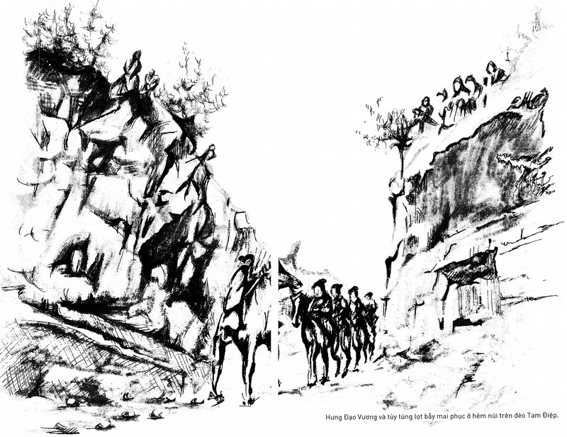
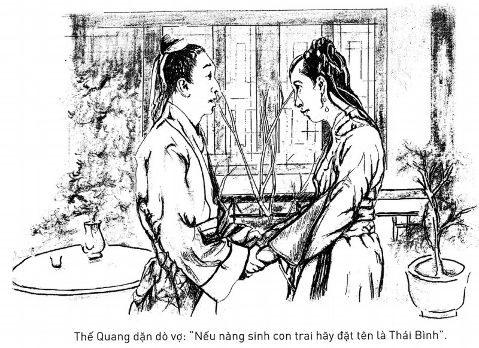
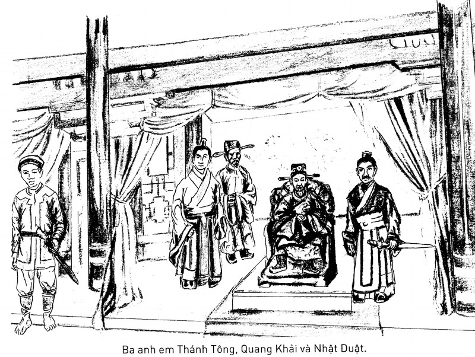
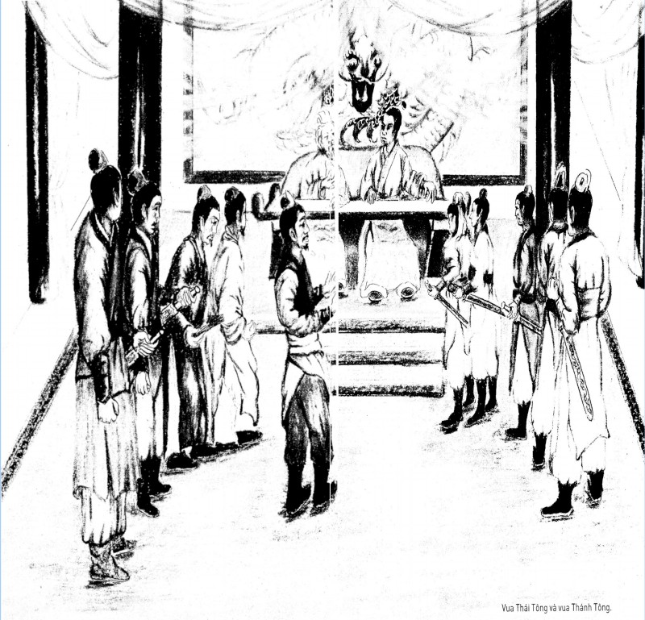
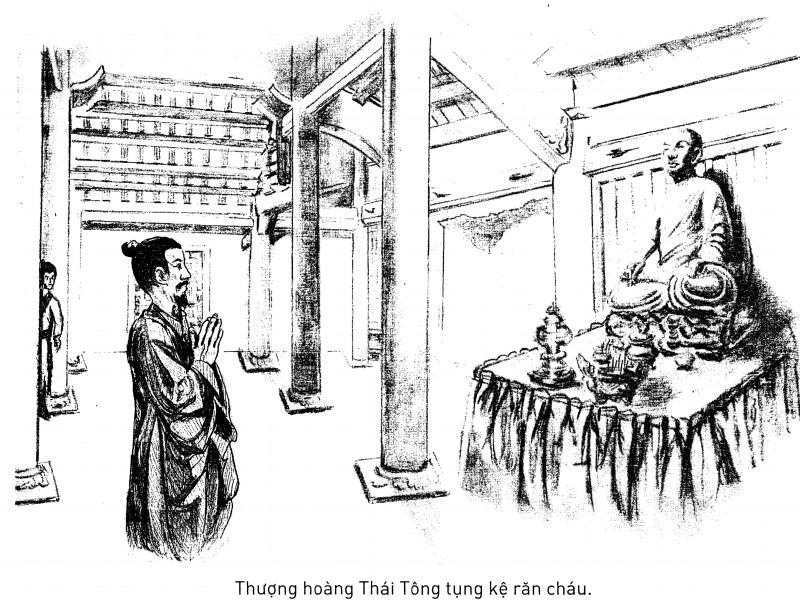
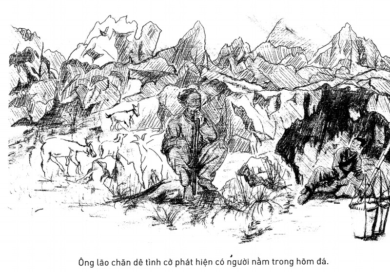
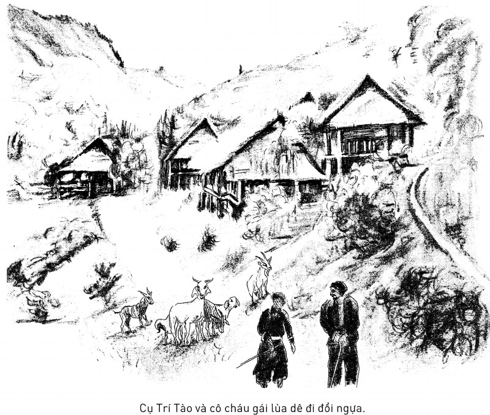
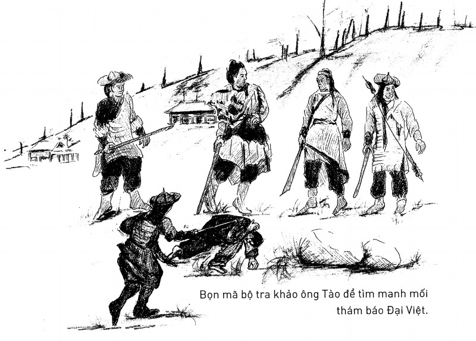
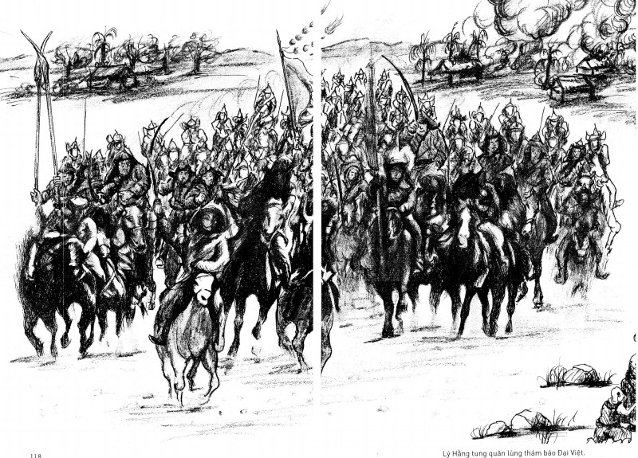
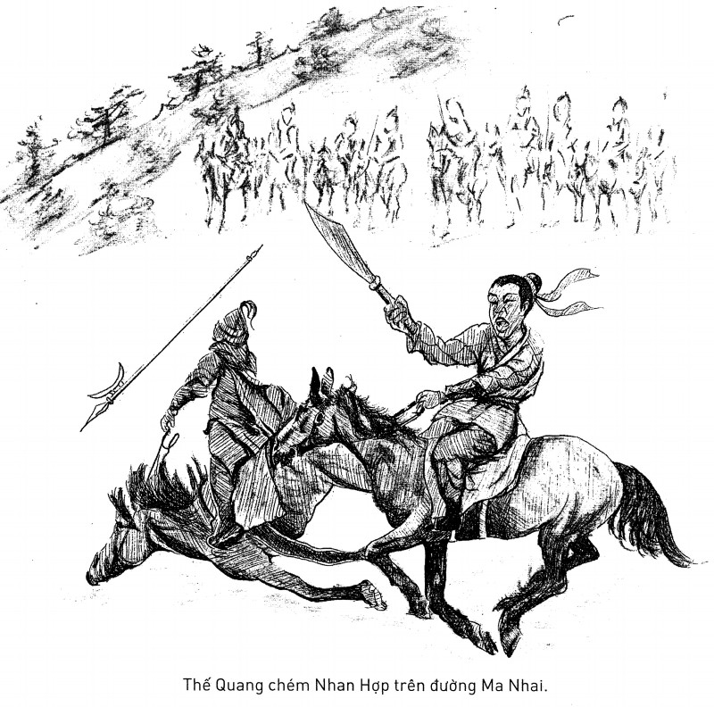
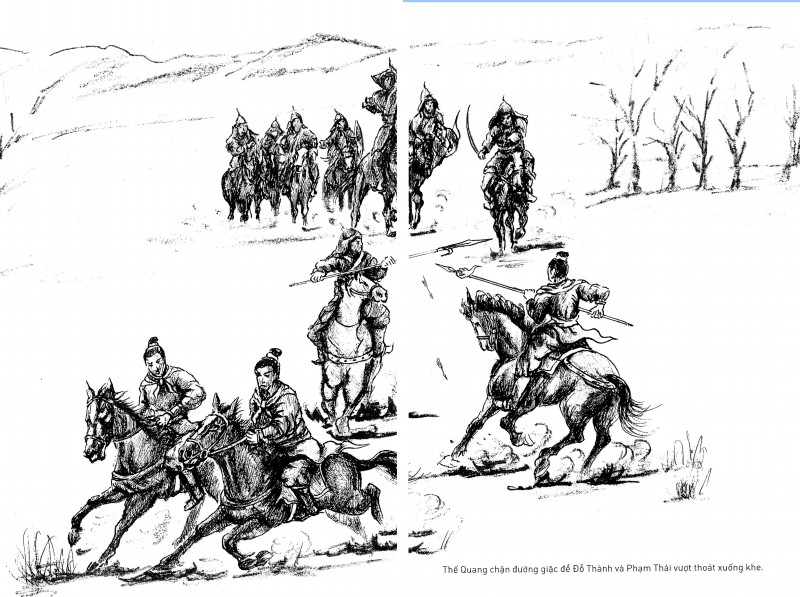
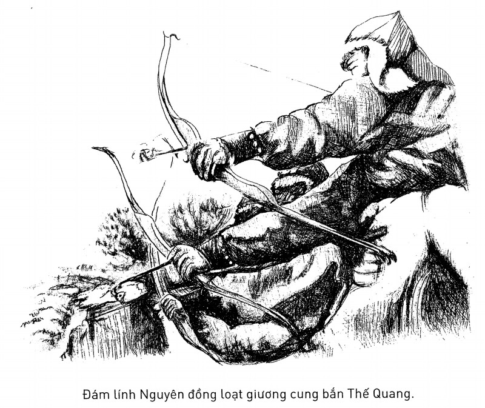
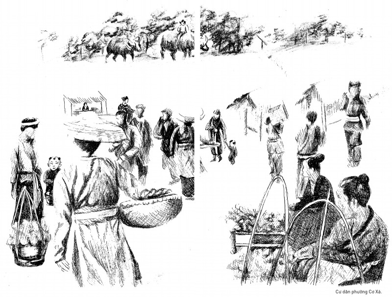
Sử chép rằng, theo chỉ dụ của Trần Thái Tông, Thiên Thành công chúa đến nhà Nhân Đạo Vương để chuẩn bị hôn lễ với Trung Thành Vương (con trai của Nhân Đạo). Do Quốc Tuấn phải lòng Thiên Thành nên hai người lén lút tư thông. Thụy Bà (chị ruột Thái Tông, mẹ nuôi Quốc Tuấn) phải đem mười mâm vàng sống đi bồi hoàn, còn Thái Tông cắt 2000 khoảnh ruộng đền sính lễ cho Trung Thành Vương ( Đại Việt Sử Ký Toàn Thư – Bản Kỷ – Quyển V ). ↩
Tiểu tuyết (trời rét) là một trong 24 tiết của lịch Tiết khí nhằm ngày 22 tháng 11 dương lịch. Quy đổi sang âm lịch thì ngày 22/11/1284 là ngày 14 tháng Mười năm Giáp Thân. ↩
Đông chí (giữa đông) là một trong 24 tiết của lịch Tiết khí nhằm ngày 22 tháng 12 dương lịch. Quy đổi sang âm lịch thì ngày 22/12/1284 là ngày 15 tháng Mười một năm Giáp Thân. ↩
Đơn vị tiền tệ thời Nguyên. ↩
Thạch là đơn vị đo lường thể tích thời xưa, một thạch tương đương 100kg hoặc xấp xỉ 100kg (đơn vị đo lường chỉ mang tính tương đối, do có sự chênh lệch từ các nguồn cứ liệu). ↩
Vùng núi tiếp giáp với lãnh thổ Trung Hoa, thuộc huyện Lộc Bình, Lạng Sơn ngày nay. ↩
Tương đương 1,75m. Thước, tấc là đơn vị đo chiều dài thời xưa, 1 thước 23cm, 1 tấc = 2,3cm (đơn vị đo lường chỉ mang tính tương đối, do có sự chênh lệch từ các nguồn cứ liệu). ↩
Nay thuộc quận Hai Bà Trưng, thành phố Hà Nội. ↩
Sự kiện được ghi lại trong chính sử, xảy ra năm Ất Sửu (1265) “Mùa thu, tháng 7, nước to, vỡ ở phường Cơ Xá. Người và súc vật bị chết đuối nhiều” (theo Đại Việt Sử Ký Toàn Thư – Bản Kỷ – Quyển V ). ↩
Đơn vị đo lường chiều dài thời xưa, 10 trượng = 100 thước, tương đương 23m (đơn vị đo lường chỉ mang tính tương đối, do có sự chênh lệch từ các nguồn cứ liệu). ↩
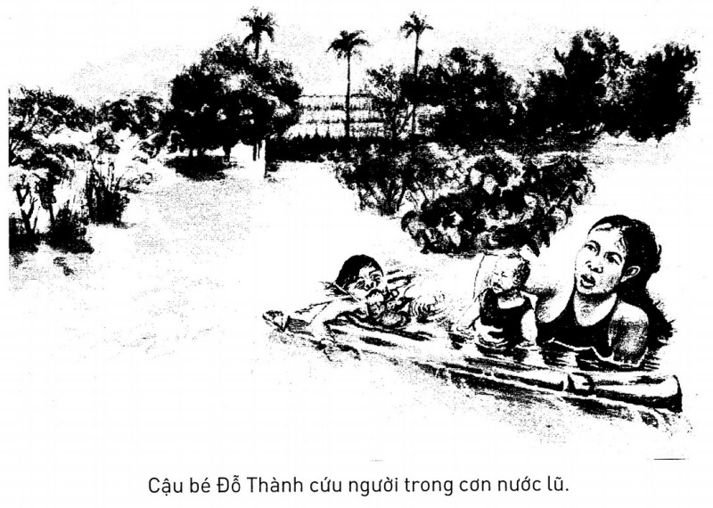
Đơn vị đo lường chiều dài thời xưa, 1 dặm = 414m (đơn vị đo lường chỉ mang tính tương đối, do có sự chênh lệch từ các nguồn cứ liệu). ↩
Thuộc vùng tây nam Hà Nội và một phần tỉnh Hòa Bình ngày nay. ↩
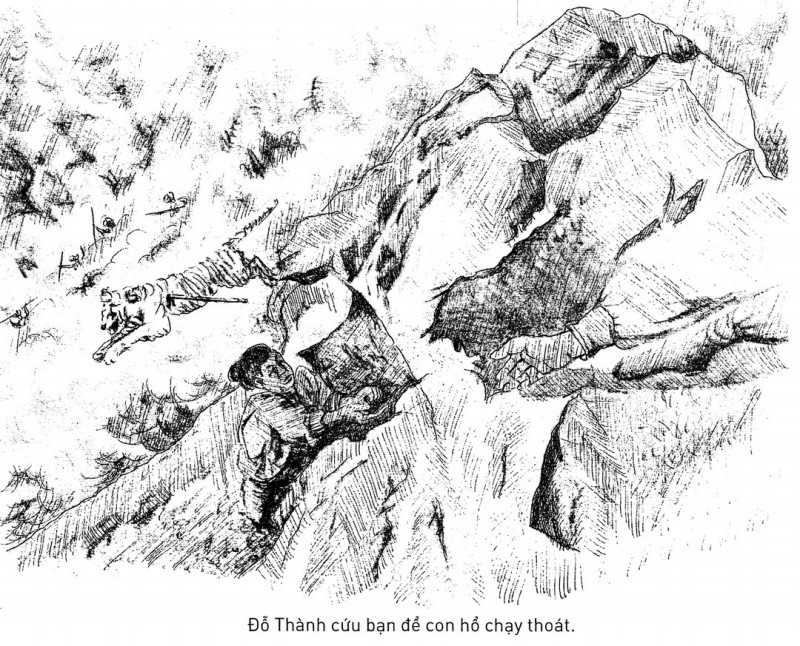
Binh thư yếu lược là tác phẩm viết về nghệ thuật quân sự do Hưng Đạo Vương Trần Quốc Tuấn biên soạn. Đã thất truyền. ↩
Trường dạy võ được thành lập năm Quý Sửu 1253 (Nguyên Phong thứ 3), tọa lạc tại phía tây nam kinh thành Thăng Long. ↩
Thời điểm ấy là Trần Thái Tông (1218–1277), vị vua sáng lập triều Trần, trị vì 32 năm, làm Thái thượng hoàng 19 năm. ↩
Hai vua, tức Thái thượng hoàng Thái Tông và Thánh Tông hoàng đế. ↩
Phủ đệ của Trần Hưng Đạo ở Vạn Kiếp, nay thuộc thị xã Chí Linh, tỉnh Hải Dương ( Đại Việt Sử Ký Toàn Thư – Bản Kỷ – Quyển V ). Theo thông lệ nhà Trần, các vị vương hầu dù lãnh trọng trách trong triều đình nhưng phần lớn thời gian vẫn ở tại phủ đệ của họ, khi có công việc hoặc nhà vua thiết triều thì mới lên kinh làm việc. ↩
Do không có tư liệu về Hoài Văn Hầu Trần Quốc Toản, nên tác giả hư cấu nhân vật An Bình Vương là cha của người anh hùng trẻ tuổi. Theo quy định thời Trần, những người có quan hệ huyết thống gần gũi với vua, nếu con được phong hầu thì thông thường có cha mang tước vương. ↩
Theo Đại Việt Sử Ký Toàn Thư – Bản Ký – Quyển V , năm Thiệu Long thứ 4 (1261) “Nhà Nguyên phong vua làm An Nam Quốc Vương, ban cho 3 tấm gấm tây, 6 tấm gấm kim thục”. Thực tế đến năm 1271, Hốt Tất Liệt mới lập nước Đại Nguyên, giai đoạn 1261 ông ta mới chỉ là Đại Hãn Mông Cổ, lấy niên hiệu là Trung Thống. ↩
Trong chiếu thư của nhà Nguyên gửi Trần Thánh Tông năm 1275 có đoạn “Theo chế độ của tổ tông đã quy định, phàm các nước nội phụ thì vua phải thân hành tới chầu, gửi con em làm tin, biên nạp dân số, nộp thuế lệ, mộ dân trợ binh và vẫn đặt quan Đạt Lỗ Hoa Xích để thống trị; sáu điều nói trên, năm trước đã có lời dụ cho khanh biết rồi, thế mà quy phụ đã hơn mười lăm năm, khanh chưa từng tới triều kiến một lần nào, và các điều quy định đến nay vẫn chưa thi hành; tuy rằng ba năm tới cống hiến một lần, nhưng các đồ cống hiến đều không dùng được” ( An Nam chí lược – Mục Đại Nguyên chiếu chế của tác giả Lê Tắc). ↩
Ngụ ý về việc Trần Quốc Khang khi cai quản Diễn Châu đã cho xây phủ đệ nguy nga lộng lẫy vào năm 1270 ( Đại Việt Sử Ký Toàn Thư – Bản Kỷ – Quyển V ), về sau sợ vua trách cứ nên ông cải hoàn thành chùa, tục gọi là chùa Thông. ↩
Trần Liễu (cha của Trần Hưng Đạo) là anh ruột Trần Thái Tông. Do con của hoàng hậu Chiêu Thánh chết yểu ngay sau sinh nên Trần Thủ Độ cướp vợ của Liễu là công chúa Thuận Thiên bấy giờ đang mang thai 3 tháng về làm vợ Thái Tông (đổi làm hoàng hậu Thuận Thiên). Trần Liễu bất bình nổi loạn sông Cái, sau được miễn tội nhưng lòng vẫn đầy oán hận. Trước khi chết, Liễu trăn trối với con phải cướp ngôi Thái Tông, rửa nhục, trả oán cho cha ( Đại Việt Sử Ký Toàn Thư – Bản Kỷ – Quyển V ). ↩
Mến tài đức của Phạm Ngũ Lão, Trần Hưng Đạo gả con gái cho ông, song do quy định con cháu hoàng tộc không được lấy người khác họ nên Vương thu xếp cho con gái đẻ giả làm con gái nuôi. ↩
Theo âm Hán Việt còn có thể đọc là Tráng Nông. Đây là một chi phương nam của tộc người Tráng (Choang), có quan hệ huyết thống gần gũi với người Tày – Nùng ở Việt Nam. ↩
Tức Nùng Trí Cao (1025–1055), lãnh tụ khởi nghĩa của người Tày – Nùng ở vùng biên giới Việt – Trung chống lại nhà Lý (Việt Nam) và nhà Tống (Trung Quốc) để đòi quyền tự chủ. Ông là nhân vật anh hùng của người Tày – Nùng nước ta và người Tráng ở phương Bắc. ↩
Khăn trùm đầu của phụ nữ dân tộc Nùng, khi lao động hoặc sinh hoạt. ↩
Cách gọi người Kinh (Việt Nam) của các dân tộc thuộc ngữ hệ Tai–Kadai (Thái – Kadai), trong đó có người Tráng, người Thái, người Lào, người Tày – Nùng. Ngày nay cách gọi này không còn phổ biến. ↩
Văn Thiên Tường (1236–1283), Thừa tướng nhà Nam Tống, là người đã nỗ lực tổ chức công cuộc kháng Nguyên khi nước sắp mất. Bị giặc bắt, ông chấp nhận cái chết chứ nhất quyết không đầu hàng. Ông được tôn vinh là một trong những anh hùng dân tộc hàng đầu của Trung Quốc. ↩
Tây Hạ là một vương quốc nằm ở vùng tây bắc Trung Quốc, do Lý Nguyên Hạo (1003–1048) tức Hạ Cảnh Tông thuộc bộ tộc Đảng Hạng (Tangut) sáng lập năm 1038, đến năm 1227 bị Mông Cổ tiêu diệt. Một bộ phận người Tây Hạ đầu quân cho Mông Cổ, trở thành những kẻ rất thiện chiến. ↩